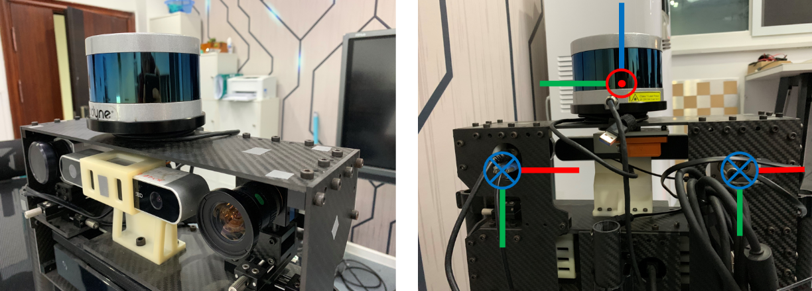
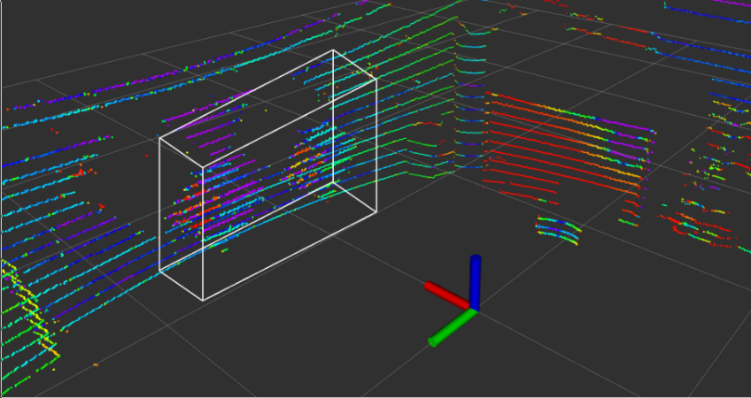

相机雷达联合标定
相机雷达联合标定
为了实现RGB相机与激光雷达之间的数据融合，需要对相机和雷达进行联合标定。本篇文章所使用的方法主要是2017年Dhall提出的一种开源的标定方法，所进行的操作流程也大致和github中的readme相仿。之后会简单阐述一下怎么进行雷达和相机信息的Overlap.
本文所使用的传感器为velodyne公司的vlp-16激光雷达和Imagingsource的工业相机，两者刚性固定。
软件环境配置
该方法有以下先备条件：
- ROS
- aruco_ros包
- aruco_mapping包，其中该包需要安装他们更改过的版本，而不是原生版本
安装
- git clone
1 | git clone git@github.com:ankitdhall/lidar_camera_calibration.git |
- 将
dependencies/aruco_ros和dependencies/aruco_mapping文件夹path/to/your/ros/workspace/src - 运行以下代码
1 | catkin_make -DCATKIN_WHITELIST_PACKAGES="aruco;aruco_ros;aruco_msgs" |
参数文件配置
对于不同的标定环境，所需要修改的是conf文件夹下的一系列参数文件，以及launch文件夹下的.launch文件
config_file.txt
1 | 640 480 |
这里面的内容分别为
1 | 相机分辨率 宽 长 |
相机分辨率的设置需要和相机内参标定.ini文件相匹配。
接下来的x- , x+, y- , y+, z- , z+用来制作一个包围盒，将不需要，即不包含标定板的点进行筛除。该方法所使用到的x,y,z都是以相机坐标系为准的。该方法规定相机和激光雷达的坐标系如下所示。

其中红色代表x轴，绿色代表y轴，蓝色代表z轴。相机坐标系下z轴向前，y轴向下，x轴向右。因此可以通过x- , x+, y- , y+, z- , z+来规划一个包围盒，将所需要的点云进行选取以进行下一步操作。

点云强度阈值 这一步是筛选出标定板边缘的点，需要手动进行调整。该值越大，在之后cloud窗口中的点越少，筛取的能力
是否使用camera_info １表示使用，０表示不使用。由于camera_info中自己会输出相机的一系列参数，假如选择使用的话，就不需要在后面输入相机的内参参数。若选择不使用，则相机的内参参数是从config.txt中导入的。
最大迭代次数 表示在之后线拟合的时候进行的最大迭代次数
初始旋转关系 表示两个传感器之间的一个初始旋转关系，与两者之间的平移关系无关。此处依旧存在疑问（link），倘若传感器都是正向放置安装，则使用默认即可
marker_coordinates.txt
这个文件中放置的的关于标定板的一些信息。关于标定板必须要数据准确，否则会影响到之后的标定结果
1 | 2 |
制作完毕之后的标定板如下所示

1 | 所使用标定板数量 |
在这个文件中的单位为厘米cm
lidar_camera_calibration
1 | lidar_camera_calibration: |
其中，前面两个是插上的usb相机的topic，后面是点云的topic。在插上传感器之后可以通过rostopic list 来查看相应的topic。
find_transform.launch
由于使用该方法来进行标定工作的时候，需要aruco标识的检测工作，所以在启动标定的launch文件之前需要启动aruco相关的节点。因此在.launch文件中需要修改关于aruco相关的参数。
1 |
|
- 倘若插着两个传感器直接进行标定工作，在
.launch文件中需要把<param name="/use_sim_time" value="true"/>给注释掉，但是建议使用rosbag录制数据之后进行标定工作。 - 注意相机内参标定文件
.ini需要放到aruco_mapping包下中的正确位置 - 修改
num_of_markers - 修改
marker size